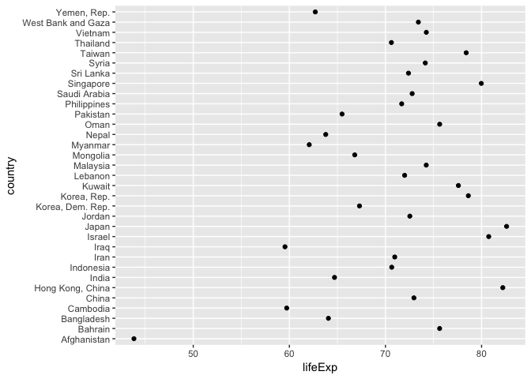
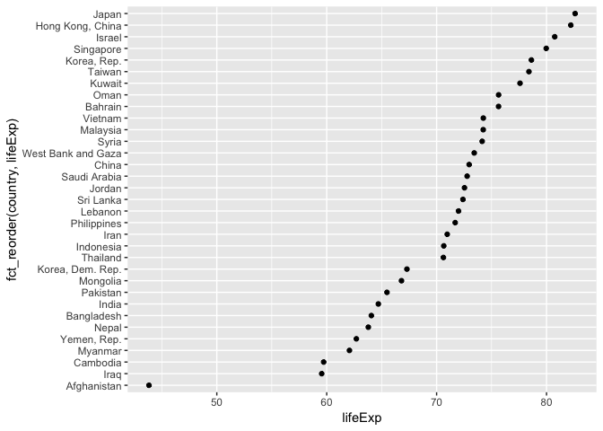
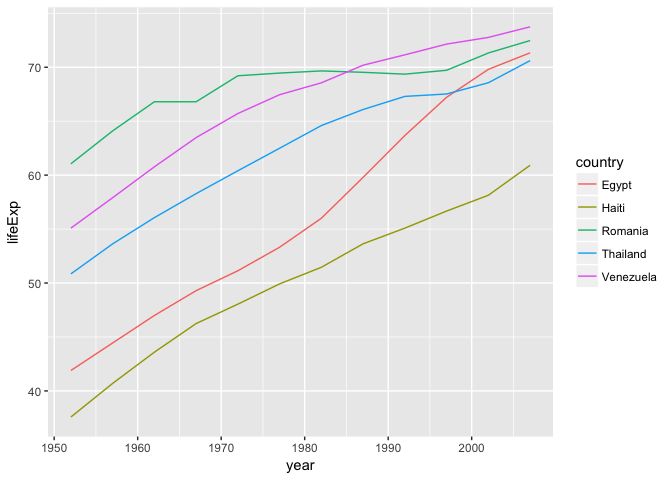
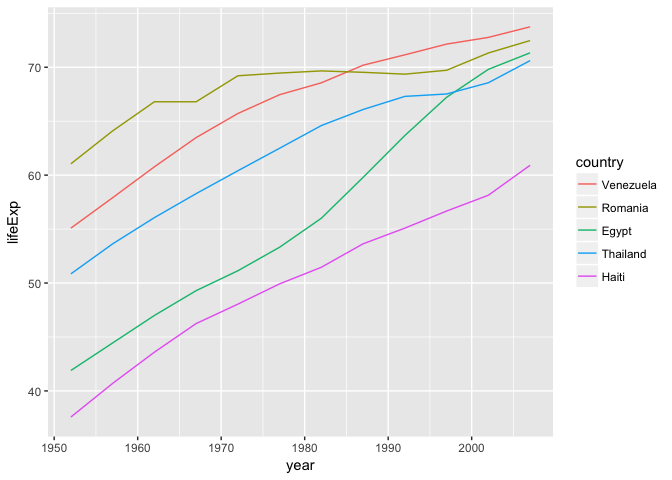

Be the boss of your factors
Under development
Factors: where they fit in
We’ve spent alot of time working with big, beautiful data frames, like the Gapminder data. But we also need to manage the individual variables housed within.
Factors are the variable type that useRs love to hate. It is how we store truly categorical information in R. The values a factor can take on are called the levels. For example, the levels of the factor continent in Gapminder are are “Africa”, “Americas”, etc. and this is what’s usually presented to your eyeballs by R. In general, the levels are friendly human-readable character strings, like “male/female” and “control/treated”. But never ever ever forget that, under the hood, R is really storing integer codes 1, 2, 3, etc.
This Janus-like nature of factors means they are rich with booby traps for the unsuspecting but they are a necessary evil. I recommend you learn how to be the boss of your factors. The pros far outweigh the cons. Specifically in modelling and figure-making, factors are anticipated and accommodated by the functions and packages you will want to exploit.
The worst kind of factor is the stealth factor. The variable that you think of as character, but that is actually a factor (numeric!!). This is a classic R gotcha. Check your variable types explicitly when things seem weird. It happens to the best of us.
Where do stealth factors come from? Base R has a burning desire to turn character information into factor. The happens most commonly at data import via read.table() and friends. But data.frame() and other functions are also eager to convert character to factor. To shut this down, use stringsAsFactors = FALSE in read.table() and data.frame() or – even better – use the tidyverse! For data import, use readr::read_csv(), readr::read_tsv(), etc. For data frame creation, use tibble::tibble(). And so on.
Good articles about how the factor fiasco came to be:
- stringsAsFactors: An unauthorized biography by Roger Peng
- stringsAsFactors =
by Thomas Lumley
The forcats package
This is a reboot of the STAT 545 factor material from 2015 and before, in light of the very recent birth of the forcats package.
forcats is a non-core package in the tidyverse. It is installed via install.packages("tidyverse"), but not loaded via library(tidyverse). Load it yourself as needed via library(forcats). Main functions start with fct_. There really is no coherent family of base functions that forcats replaces – that’s why it’s such a welcome addition.
Currently this lesson will be mostly code vs prose. See the previous lesson for more discussion during the transition.
Load tidyverse, forcats, gapminder
library(tidyverse)
#> Loading tidyverse: ggplot2
#> Loading tidyverse: tibble
#> Loading tidyverse: tidyr
#> Loading tidyverse: readr
#> Loading tidyverse: purrr
#> Loading tidyverse: dplyr
#> Conflicts with tidy packages ----------------------------------------------
#> filter(): dplyr, stats
#> lag(): dplyr, stats
library(forcats)
library(gapminder)Factor inspection
Get to know your factor before you start touching it! It’s polite.
gapminder
#> # A tibble: 1,704 × 6
#> country continent year lifeExp pop gdpPercap
#> <fctr> <fctr> <int> <dbl> <int> <dbl>
#> 1 Afghanistan Asia 1952 28.801 8425333 779.4453
#> 2 Afghanistan Asia 1957 30.332 9240934 820.8530
#> 3 Afghanistan Asia 1962 31.997 10267083 853.1007
#> 4 Afghanistan Asia 1967 34.020 11537966 836.1971
#> 5 Afghanistan Asia 1972 36.088 13079460 739.9811
#> 6 Afghanistan Asia 1977 38.438 14880372 786.1134
#> 7 Afghanistan Asia 1982 39.854 12881816 978.0114
#> 8 Afghanistan Asia 1987 40.822 13867957 852.3959
#> 9 Afghanistan Asia 1992 41.674 16317921 649.3414
#> 10 Afghanistan Asia 1997 41.763 22227415 635.3414
#> # ... with 1,694 more rows
str(gapminder)
#> Classes 'tbl_df', 'tbl' and 'data.frame': 1704 obs. of 6 variables:
#> $ country : Factor w/ 142 levels "Afghanistan",..: 1 1 1 1 1 1 1 1 1 1 ...
#> $ continent: Factor w/ 5 levels "Africa","Americas",..: 3 3 3 3 3 3 3 3 3 3 ...
#> $ year : int 1952 1957 1962 1967 1972 1977 1982 1987 1992 1997 ...
#> $ lifeExp : num 28.8 30.3 32 34 36.1 ...
#> $ pop : int 8425333 9240934 10267083 11537966 13079460 14880372 12881816 13867957 16317921 22227415 ...
#> $ gdpPercap: num 779 821 853 836 740 ...
str(gapminder$continent)
#> Factor w/ 5 levels "Africa","Americas",..: 3 3 3 3 3 3 3 3 3 3 ...
levels(gapminder$continent)
#> [1] "Africa" "Americas" "Asia" "Europe" "Oceania"
nlevels(gapminder$continent)
#> [1] 5
class(gapminder$continent)
#> [1] "factor"
summary(gapminder$continent)
#> Africa Americas Asia Europe Oceania
#> 624 300 396 360 24Get a result similar to dplyr::count(), but on a free-range factor, with forcats::fct_count().
gapminder %>%
count(continent)
#> # A tibble: 5 × 2
#> continent n
#> <fctr> <int>
#> 1 Africa 624
#> 2 Americas 300
#> 3 Asia 396
#> 4 Europe 360
#> 5 Oceania 24
fct_count(gapminder$continent)
#> # A tibble: 5 × 2
#> f n
#> <fctr> <int>
#> 1 Africa 624
#> 2 Americas 300
#> 3 Asia 396
#> 4 Europe 360
#> 5 Oceania 24Dropping unused levels
Just because you drop all the rows corresponding to a specific factor level, the levels of the factor itself do not change. This will come back to haunt you when you make a figure and all levels are included in the automatic legend. Sometimes it’s all legend, no figure!
Watch what happens to the levels of country (= nothing) when we filter Gapminder to a handful of countries.
h_countries <- c("Egypt", "Haiti", "Romania", "Thailand", "Venezuela")
h_gap <- gapminder %>%
filter(country %in% h_countries)
nlevels(h_gap$country)
#> [1] 142Even though h_gap only has data for a handful of countries, we are still schlepping around all 142 levels from the original gapminder tibble.
How can you get rid of them? The base function droplevels() operates on all the factors in a data frame or on a single factor. The function forcats::fct_drop() operates on a factor.
h_gap_dropped <- h_gap %>%
droplevels()
nlevels(h_gap_dropped$country)
#> [1] 5
## use forcats::fct_drop() on a free-range factor
h_gap$country %>%
fct_drop() %>%
levels()
#> [1] "Egypt" "Haiti" "Romania" "Thailand" "Venezuela"Change order of the levels, principled
By default, factor levels are ordered alphabetically. Which might as well be random, when you think about it! It is preferable to order the levels according to some principle:
- Frequency. Make the most common level the first and so on.
- Another variable. Order factor levels according to a summary statistic for another variable. Example: order Gapminder countries by life expectancy.
First, we order continent by frequency, forwards and backwards. Motivated by the downstream need to make tables and figures, esp. frequency barplots.
## default order is alphabetical
gapminder$continent %>%
levels()
#> [1] "Africa" "Americas" "Asia" "Europe" "Oceania"
## order by frequency
gapminder$continent %>%
fct_infreq() %>%
levels() %>% head()
#> [1] "Africa" "Asia" "Europe" "Americas" "Oceania"
## backwards!
gapminder$continent %>%
fct_infreq() %>%
fct_rev() %>%
levels() %>% head()
#> [1] "Oceania" "Americas" "Europe" "Asia" "Africa"Now we order country by another variable, forwards and backwards. This other variable is usually quantitative and you will order the factor accoding to a grouped summary. The factor is the grouping variable and the default summarizing function is median() but you can specify something else.
## order countries by median life expectancy
fct_reorder(gapminder$country, gapminder$lifeExp) %>%
levels() %>% head()
#> [1] "Sierra Leone" "Guinea-Bissau" "Afghanistan" "Angola"
#> [5] "Somalia" "Guinea"
## order accoring to minimum life exp instead of median
fct_reorder(gapminder$country, gapminder$lifeExp, min) %>%
levels() %>% head()
#> [1] "Rwanda" "Afghanistan" "Gambia" "Angola"
#> [5] "Sierra Leone" "Cambodia"
## backwards!
fct_reorder(gapminder$country, gapminder$lifeExp, .desc = TRUE) %>%
levels() %>% head()
#> [1] "Iceland" "Japan" "Sweden" "Switzerland" "Netherlands"
#> [6] "Norway"Example of why we reorder factor levels: often makes plots much better! When a factor is mapped to x or y, it should almost always be reordered by the quantitative variable you are mapping to the other one.
gap_asia_2007 <- gapminder %>% filter(year == 2007, continent == "Asia")
ggplot(gap_asia_2007, aes(x = lifeExp, y = country)) + geom_point()
ggplot(gap_asia_2007, aes(x = lifeExp, y = fct_reorder(country, lifeExp))) +
geom_point()
Use fct_reorder2() when you have a line chart of a quantitative x against another quantitative y and your factor provides the color. This way the legend appears in some order as the data! Contrast the legend on the left with the one on the right.
h_countries <- c("Egypt", "Haiti", "Romania", "Thailand", "Venezuela")
h_gap <- gapminder %>%
filter(country %in% h_countries) %>%
droplevels()
ggplot(h_gap, aes(x = year, y = lifeExp, color = country)) +
geom_line()
ggplot(h_gap, aes(x = year, y = lifeExp,
color = fct_reorder2(country, year, lifeExp))) +
geom_line() +
labs(color = "country")
Change order of the levels, “because I said so”
Sometimes you just want to hoist one or more levels to the front. Why? Because I said so. This resembles what we do when we move variables to the front with dplyr::select(var1, var, everything()).
h_gap$country %>% levels()
#> [1] "Egypt" "Haiti" "Romania" "Thailand" "Venezuela"
h_gap$country %>% fct_relevel("Romania", "Haiti") %>% levels()
#> [1] "Romania" "Haiti" "Egypt" "Thailand" "Venezuela"Recode the levels
Sometimes you have better ideas about what certain levels should be. Recode them.
i_gap <- gapminder %>%
filter(country %in% c("United States", "Sweden", "Australia")) %>%
droplevels()
i_gap$country %>% levels()
#> [1] "Australia" "Sweden" "United States"
i_gap$country %>%
fct_recode("USA" = "United States", "Oz" = "Australia") %>% levels()
#> [1] "Oz" "Sweden" "USA"